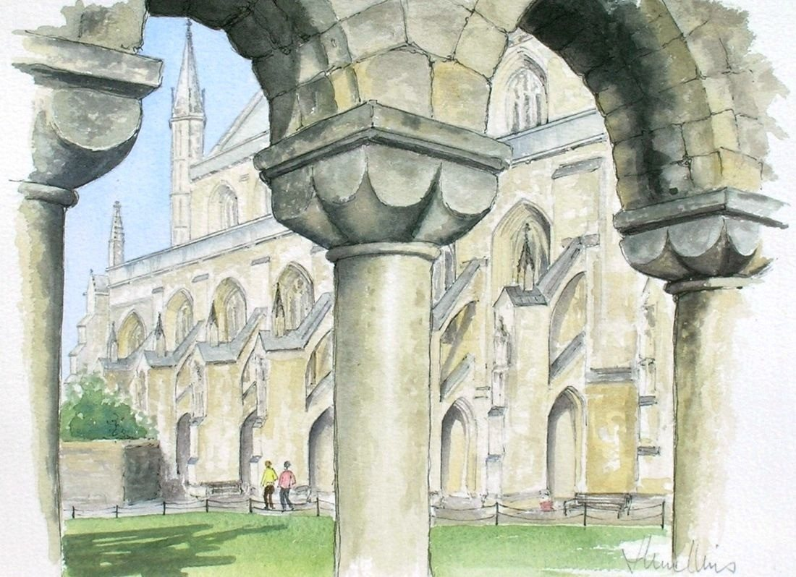

Select the picture to see it larger.
On a wall

Shown in a typical mount and frame, which are not included. The painting itself is 23 × 28 cm. Above a cabinet about 90 cm wide. The room is an illustration.
Winchester Cathedral
- Medium
- Ink and watercolour on paper
- Size
- 23 × 28 cm
- Year
- 1986
- Inspired by
- Winchester, Hampshire
- Price
- £100
- Catalogue no.
- 178
[A few lines from Joan about this painting]
Ask about this paintingUK only. Collection from Nantwich is free; UK postage is quoted when you enquire. How buying works